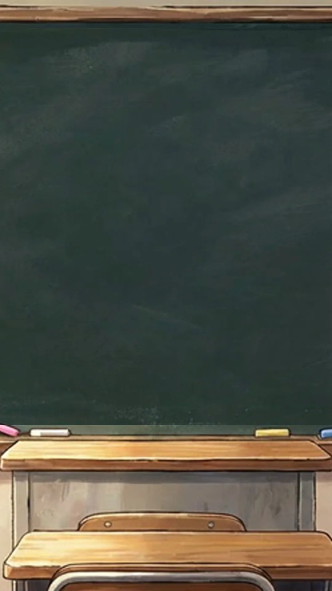

ขอบคุณที่สนับสนุนนะคะ!
応援ありがとう！これからもお勉強頑張ろうね！
応援ありがとう！これからもお勉強頑張ろうね！

🇯🇵 สุ่มขนมญี่ปุ่นยอดฮิตที่แนะนำโดยผู้พัฒนา!
ลองกดสุ่มดูไหมครับ? หากคุณซื้อสินค้าผ่านลิงก์นี้ ค่าคอมมิชชันส่วนหนึ่งจะช่วยสนับสนุนเรา
(ราคาสินค้าเท่าเดิมครับ)
*เราไม่ได้เป็นผู้ขายโดยตรง
เป็นเพียงการแนะนำสินค้าคุณภาพจาก Shopee เท่านั้น
© 2026 YUI&YUTO. All rights reserved.

ยินดีต้อนรับนะ! วันนี้จะเรียนภาษาญี่ปุ่นกับฉันไหม?
* นี่คือส่วนหนึ่งของคำศัพท์ที่คุณจะได้เรียนรู้จากเกมนี้ (This is a part of the vocabulary you will learn from this educational game).